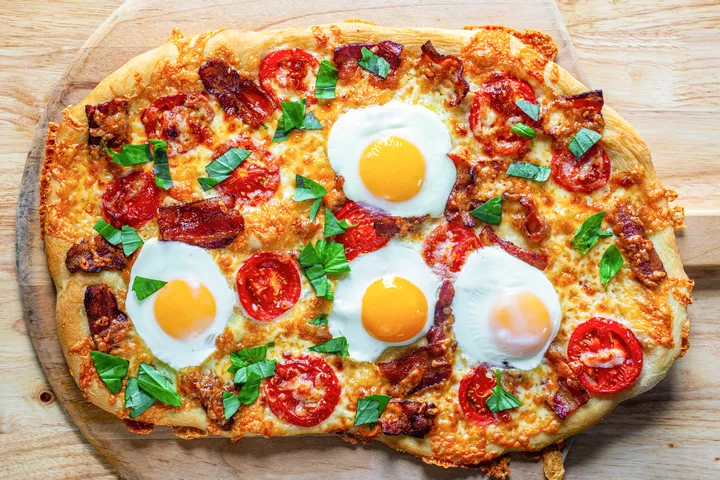

Breakfast Pizza

Description
Move over, breakfast sandwich. This pizza is kinda like you, but on steroids! Made with no-knead dough and topped with bacon, cheddar, tomatoes, and eggs, this will make any weekend morning family breakfast special.
Ingredients
- Vegetable oil or spray, for the baking sheet
- 1 tablespoon corn meal, for the baking sheet
- 1/2 recipe of No-Knead Pizza Dough left to rise overnight or 1 pound store-bought pizza dough
- 6 slices (about 6 ounces) bacon, cut into thirds
- 2 tablespoons olive oil
- 3-4 golf-ball size tomatoes, sliced (optional)
- 1/2 cups (6 ounces) loosely packed grated cheddar cheese
- 4 large eggs
- 2 tablespoons chopped fresh basil, parsley, or oregano (for garnish)
Steps
- Preheat the oven and prep baking sheet
- Flatten the dough and let it rest
- Cook the bacon
- Shape the dough
- Add toppings to pizza dough
- Partially bake the pizza
- Add the eggs and return the pizza to the oven to finish baking
- Serve the pizza